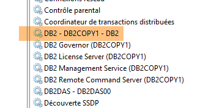
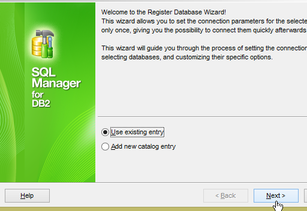
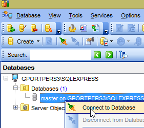
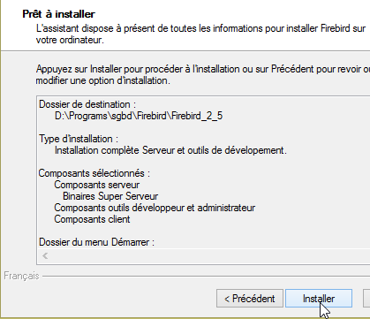

23. Appendices
Here we explain how to install the tools used in this document on Windows 7 or 8 machines. The screenshots generally show the 64-bit versions of the DBMS and installed tools. The reader should adapt to their own environment.
23.1. Installing a JDK
The latest JDK can be found at the URL [http://www.oracle.com/technetwork/java/javase/downloads/index.html] (October 2014). We will refer to the JDK installation directory as <jdk-install> hereafter.
23.2. Installing Maven
Maven is a tool for managing dependencies in a Java project and more. It is available (October 2014) at the URL [http://maven.apache.org/download.cgi].
Download and unzip the archive. We will refer to the Maven installation directory as <maven-install>.
- In [1], the [conf/settings.xml] file configures Maven;
It contains the following lines:
<!-- localRepository
| The path to the local repository that Maven will use to store artifacts.
|
| Default: ${user.home}/.m2/repository
<localRepository>/path/to/local/repo</localRepository>
-->
The default value on line 4 may cause issues for some software using Maven if, like me, your {user.home} path contains a space (for example, [C:\Users\Serge Tahé]). We will specify (line 7) a different folder for the local Maven repository:
<!-- localRepository
| The path to the local repository Maven will use to store artifacts.
|
| Default: ${user.home}/.m2/repository
<localRepository>/path/to/local/repo</localRepository>
-->
<localRepository>D:\Programs\devjava\maven\.m2\repository</localRepository>
On line 7, avoid using a path that contains spaces.
We will install SpringSource Tool Suite [http://www.springsource.com/developer/sts] (October 2014), an Eclipse environment pre-configured with numerous plugins related to the Spring framework and also with a pre-installed Maven configuration.
- Go to the SpringSource Tool Suite (STS) website [1] to download the current version of STS [2A] [2B].
- The downloaded file is an installer that creates the file directory structure [3A] [3B]. In [4], we launch the executable,
- in [5], the IDE’s workspace window after closing the welcome window. In [6], display the application servers window,
- in [7], the servers window. A server is registered. It is a Tomcat-compatible VMware server.
You must specify the Maven installation directory to STS:
- in [1-2], configure STS;
- in [3-4], add a new Maven installation;
- in [5], specify the Maven installation directory;
- in [6], complete the wizard;
- in [7], set the new Maven installation as the default;
- In [8-9], verify the local Maven repository—the folder where it will store the dependencies it downloads and where STS will place the artifacts that are built;
You must also select a JDK (Java Development Kit) to run both Eclipse projects with and without Maven [1-5].
With [4], you can add JDKs (Java Development Kits) or JREs (Java Runtime Environments). The latter can run .class files but cannot compile .java files to produce them. The JDK can do both. You should choose a JDK because certain Maven operations require one.
To create an Eclipse project, proceed as follows:
- In [3], give the project a name;
- in [4], select an existing, empty folder;
- in [5], the project is created;
- in [5-8], create a package. A package is a folder that contains Java code. Two classes can have the same name if they belong to different packages. Within a project, there cannot be two packages with the same name. Therefore, you cannot use a package name that already exists in one of the project’s dependencies. A company will use a package name that specifies the company, the project, and its various branches;
- in [9], give the package a name;
- in [10], the created package;
- in [11-13], create a class within the package that was created;
- in [14], name the class (must follow the CamelCase convention—each word in the name must start with a capital letter followed by lowercase letters);
- in [15], verify the package;
- in [16], check the box. This requests that the static method [main] be generated. This method makes a class executable, i.e., the first class to be executed in a project;
- in [17], the class thus created;
Type the following code into the [main] method, which displays text on the console:
package st.istia;
public class Test01 {
public static void main(String[] args) {
System.out.println("test01");
}
}
- In [18-20], run the class. Its [main] method will then be executed;
- in [21-22], the result of the application;
If the [Console] view is not present, proceed as follows [1-4]:
When importing an Eclipse project, it may contain errors. This may be due to an incorrect project configuration. To correct the error (if there is one), proceed as follows:
- In [1], modify the project's [Build Path];
- In [2], the project is configured to use a JVM 1.5;
- In [3], remove this dependency;
- in [4], add a new dependency;
- in [5], add a JVM;
- In [6], select the JVM for the machine;
Once this is done, validate everything and then go to the [Java compiler] property of the project [7]:
- in [8], instruct the compiler to accept all Java language features up to and including version 1.7 (or 1.8);
- In [9], we validate;
- In [10], the reconfigured project should no longer contain any errors;
Additionally, the imported project may use UTF-8 character encoding. Follow these steps to set this encoding in the imported project [1-4]:
Additionally, it may be useful to disable spell checking in the project to prevent French comments from being underlined as incorrect. Follow steps [1-4] below:
The MySQL5 Community Edition DBMS can be found (as of June 2015) at the URL [https://dev.mysql.com/downloads/mysql/]:
The installation proceeds as follows:
- In [8], the password [root] was used. In this document, the MySQL DBMS administrator credentials are [root / root];
Once MySQL 5 is installed, open the Windows Services management page:
- [1]: Windows icon in the lower-left corner;
- In [8], set the [MySQL56] service to manual startup so that it does not consume resources unnecessarily. You will launch it from the Services page whenever you need it;
## 23.5. Installing EMS MyManager
The website [http://www.sqlmanager.net/en/] offers free clients to manage six types of DBMS:
The advantage is that they all feature the same interface for managing DBMSs. This is ideal for this document, where we want to manage all six DBMSs. There is no need to learn a new client when switching between DBMSs. They can all be found at the URL [http://www.sqlmanager.net/download/]. Download the free “lite” versions:
The download URLs are currently (May 2015) as follows:
When installing, for example, the MySQL5 MyManager client, you get the following directory structure:
- the executable is in [2];
- steps [3-8] show how to connect [MyManager] to one of the MySQL databases;
- in [4], the password is [root];
23.6. Installation of the Oracle Database Express Edition 11g Release 2
The Oracle Database Express Edition 11g Release 2 DBMS is available at the following URL (June 2015): [http://www.oracle.com/technetwork/database/database-techno logies/express-edition/downloads/index.html]:
The installation proceeds as follows:
- In [6], enter the password [system]. In this document, the Oracle administrator credentials are [system / system];
The installation sets up Oracle as a Windows service. Several services are installed, all of which are set to start automatically by default. The first step is to switch them to manual mode:
Two services must be started:
- [OracleXETNSListener], which listens on port 1521 for requests made to the DBMS;
- [OracleServiceXE], which is the DBMS;
To administer Oracle, we will use the [OraManager] client (Section 23.5). To use it, you must first install the [Oracle Database Express Edition 11g Release 2 Client] suite available at the following URL (June 2015): [http://www.oracle.com/technetwork/database/enterprise-edition/downloads/112010-win32soft-098987.html]. You must download the 32-bit version because [OraManager] is a 32-bit client:
Install this suite as follows:
- In [3], specify the folder <oracleXE-install>\app\oracle\product\11.2.0\client_1, where <oracleXE-install> is the folder where you installed Oracle Express;
Now, let’s connect the [OraManager] client to the Oracle DBMS:
- In [2], the group name is up to you;
- In [4], you must enter XE;
- In [5], the alias can be anything;
- In [6], the credentials are [system / system];
23.7. Installing the PostgreSQL 9.4 DBMS
The PostgreSQL 9.4 DBMS is available at the following URL (June 2015): [http://www.enterprisedb.com/products-services-training/pgdownload#windows]:
The installation proceeds as follows:
- In [4], the password is postgres. In this document, the PostgreSQL DBMS administrator credentials are [postgres / postgres];
The installation sets up PostgreSQL as a Windows service with automatic startup. The first thing to do is to switch it to manual mode:
Now let’s connect the [PgManager] client (see section 23.5) to the PostgreSQL database management system:
- In [2], the credentials are [postgres / postgres];
- in [3], we connect to the [postgres] database;
23.8. Installing the DB2 Express DBMS
The DB2 Express DBMS is available at the following URL (June 2015): [http://www-01.ibm.com/software/data/db2/express-c/download.html]:
The installation proceeds as follows:
- In [9], the password is [db2admin]. In this document, the DBMS administrator credentials are [db2admin / db2admin];
Note: You may be tempted to skip this step. Do not do so. It will create the folder where the DB2 databases we are going to create will be stored.
- A folder [d:\DB2] has been created [1];
- the database [SAMPLE] has been created in the folder [d:\db2\node0000];
The installation sets up DB2 as a Windows service with automatic startup. The first step is to switch it to manual mode:
 |  |
Do this for all the [DB2*] services listed above. Only the [DB2 - DB2COPY1] service needs to be started for the purposes of this document.
Now let’s connect the [Db2Manager] client (see section 23.5) to the DB2 DBMS:
 |  |
- In [1], use the credentials [db2admin / db2admin];
23.9. Installing the SQL Server 2014 Express DBMS
The SQL Server 2014 Express DBMS is available at the following URL (June 2015): [http://www.microsoft.com/fr-fr/server-cloud/products/sql-server/]:
The installation proceeds as follows:
- In [1], enter any password. We will change it later;
Next, start the SQL Server service:
Once this is done, launch the [Microsoft SQL Server Management Studio] client, which was installed along with the DBMS (see Start Menu):
We could use this client to administer SQL Server. However, for consistency with clients for other DBMSs, we will use the [MsManager] client (see Section 23.5).
- In [1], note the name of the DBMS;
- in [2], we entered the password msde. In this document, the DBMS administrator credentials are [sa / msde];
Once this is done, launch the [SQL Server Configuration Manager] tool, which was installed along with the DBMS (see Start Menu):
- By default, in [2], TCP/IP communication is not enabled. For this document, you must enable it [3];
- In [4], again for the purposes of this document, you must specify that the DBMS waits for client requests on port 1433. The value for [Dynamic TCP Ports] must be left blank;
Once this is done, launch the client [MsManager] (see section 23.5):
- in [3], enter the name noted in [1];
- in [4], the credentials are [sa / msde];
 |  |
23.10. Installing the Firebird DBMS
The Firebird 2.5.4 DBMS is available at the following URL (June 2015): [http://www.firebirdsql.org/en/firebird-2-5-4/]:
The installation proceeds as follows:
 |  |
Once this is done, let’s check the startup mode of the created Windows service:
Now let’s connect the [IBManager] client (see section 23.5) to the installed Firebird DBMS:
- in [1], the password is masterkey;
23.11. Installing the [Advanced Rest Client] Chrome plugin
In this document, we use Google’s Chrome browser (http://www.google.fr/intl/fr/chrome/browser/). We will add the [Advanced Rest Client] extension to it. Here’s how to do it:
- the app is then available for download:
- to get it, you’ll need to create a Google account. The [Google Web Store] will then ask for confirmation [1]:
- in [2], the added extension is available in the [Apps] option [3]. This option appears on every new tab you create (CTRL-T) in the browser.
## 23.12. JSON Handling in Java
In a way that is trans sparent to the developer, the [Spring MVC] framework uses the [Jackson] JSON library. To illustrate what JSON (JavaScript Object Notation) is, we present here a program that serializes objects into JSON and does the reverse by deserializing the generated JSON strings to recreate the original objects.
The 'Jackson' library allows you to construct:
- the JSON string of an object: new ObjectMapper().writeValueAsString(object);
- an object from a JSON string: new ObjectMapper().readValue(jsonString, Object.class).
Both methods may throw an exception. Here is an example.
The project above is a Maven project with the following [pom.xml] file;
<?xml version="1.0" encoding="UTF-8"?>
<project xmlns="http://maven.apache.org/POM/4.0.0"
xmlns:xsi="http://www.w3.org/2001/XMLSchema-instance"
xsi:schemaLocation="http://maven.apache.org/POM/4.0.0 http://maven.apache.org/xsd/maven-4.0.0.xsd">
<modelVersion>4.0.0</modelVersion>
<groupId>istia.st.pam</groupId>
<artifactId>json</artifactId>
<version>1.0-SNAPSHOT</version>
<dependencies>
<dependency>
<groupId>com.fasterxml.jackson.core</groupId>
<artifactId>jackson-databind</artifactId>
<version>2.3.3</version>
</dependency>
</dependencies>
</project>
- lines 12–16: the dependency that brings in the 'Jackson' library;
The [Person] class is as follows:
package istia.st.json;
public class Person {
// data
private String lastName;
private String firstName;
private int age;
// constructors
public Person() {
}
public Person(String lastName, String firstName, int age) {
this.lastName = lastName;
this.firstName = firstName;
this.age = age;
}
// signature
public String toString() {
return String.format("Person[%s, %s, %d]", lastName, firstName, age);
}
// getters and setters
...
}
The [Main] class is as follows:
package istia.st.json;
import com.fasterxml.jackson.databind.ObjectMapper;
import java.io.IOException;
import java.util.HashMap;
import java.util.Map;
public class Main {
// the serialization/deserialization tool
static ObjectMapper mapper = new ObjectMapper();
public static void main(String[] args) throws IOException {
// creating a person
Person paul = new Person("Denis", "Paul", 40);
// Display JSON
String json = mapper.writeValueAsString(paul);
System.out.println("JSON=" + json);
// Instantiate Person from JSON
Person p = mapper.readValue(json, Person.class);
// display Person
System.out.println("Person=" + p);
// an array
Person virginie = new Person("Radot", "Virginie", 20);
Person[] people = new Person[]{paul, virginie};
// Display JSON
json = mapper.writeValueAsString(people);
System.out.println("JSON people=" + json);
// dictionary
Map<String, Person> hpeople = new HashMap<String, Person>();
hpeople.put("1", paul);
hpeople.put("2", virginie);
// Display JSON
json = mapper.writeValueAsString(hpeople);
System.out.println("JSON hpeople=" + json);
}
}
Executing this class produces the following screen output:
| Json={"lastName":"Denis","firstName":"Paul","age":40}
Person = Person[Denis, Paul, 40]
Json people=[{"lastName":"Denis","firstName":"Paul","age":40},{"lastName":"Radot","firstName":"Virginie","age":20}]
Json people={"2":{"lastName":"Radot","firstName":"Virginie","age":20},"1":{"lastName":"Denis","firstName":"Paul","age":40}}
|
Key takeaways from the example:
- the [ObjectMapper] object required for JSON/Object transformations: line 11;
- the [Person] --> JSON transformation: line 17;
- the JSON --> [Person] transformation: line 20;
- the [IOException] thrown by both methods: line 13.